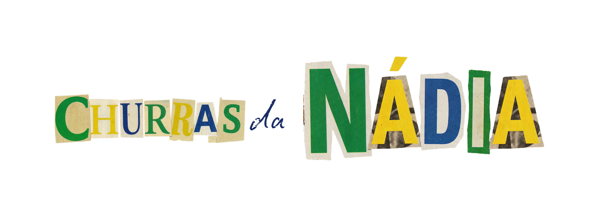
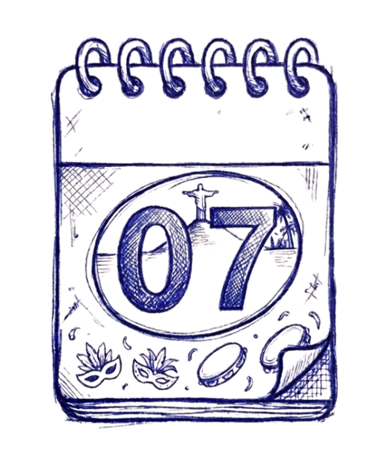
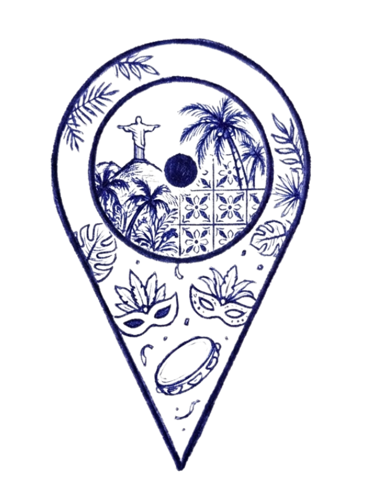
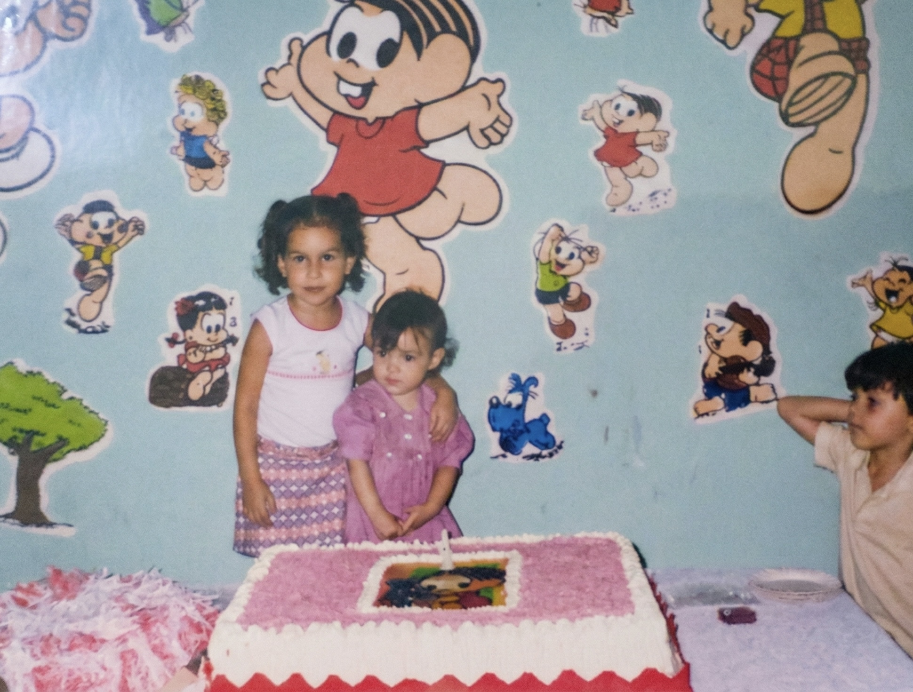
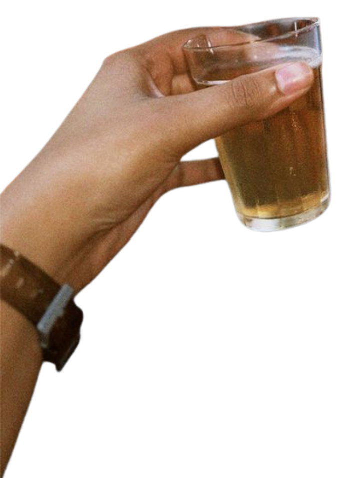

carne, caos e brasil com s

Data: 07 de março
Local: R. Almir Azevedo, 175Não é todo dia que a gente faz 29 anos, né? E já que esse é oficialmente o último ano dos 20, nada mais justo do que comemorar do jeito certo.
Vai ser uma festa bem Brasil core anos 2000. Um churras massa, talvez um bolo retangular (quem sabe), muita cerveja, músicas parcialmente canceláveis e zero formalidade.
Brasil core tá na moda.
Mas aqui é Brasil com S!
De quem viveu, de quem lembra,
de quem sabe qual é o gostinho do brasileiro.

Ajuda a gente a se organizar direitinho. É rapidinho e não dói.

Tem algo mais Brasil do que encerrar a noite cantando
Evidências a plenos pulmões?
O verdadeiro hino nacional brasileiro (na minha humilde opinião).
A música do fim eu já sei... Mas eu preciso de ajuda pra montar todo o resto da playlist.
Da sua ajuda.
Coloca aí tudo que tem cara de Brasil, tudo que lembra a gente.
Vale samba, as olds da Kelly Key, a era de horo da Anitta, Misery Business até que durou
(o melhor mashup já criado pela humanidade).
Eu aceito até Restart.
Com parcimônia.
Mas aceito.
Clica ali e adiciona tuas musiquinhas na playlist da festa.
Se for vergonhoso, melhor ainda.